01
On-Policy Self-Distillation (OPSD)
Teacher 与 Student 共享参数、Teacher 额外观测答案，Student 在自身 rollout 上接收 teacher 分布监督，无需外部教师即可自我提升推理能力。
从无差别蒸馏到选择性蒸馏
EMNLP 2026 · Selective OPSD
Teacher 与 Student 共享参数、Teacher 额外观测答案，Student 在自身 rollout 上接收 teacher 分布监督，无需外部教师即可自我提升推理能力。
标准 OPSD 对所有 rollout 统一蒸馏，但不同 rollout 的学习价值差异巨大（student 已接近 teacher 时信号弱；分歧大时纠正信号强），无差别对齐会稀释有效的纠正信号。
在完整 rollout 之间做排他选择（区别于 token-level 重加权），只把高价值轨迹送入蒸馏，避免整条低价值轨迹的噪声注入训练。
EMNLP 2026 · Selective OPSD
所有 rollout 同等蒸馏，稀释纠正信号
量化每条 rollout 的蒸馏价值
每条 rollout 都需 teacher forward
只保留高价值轨迹，降低 teacher 开销
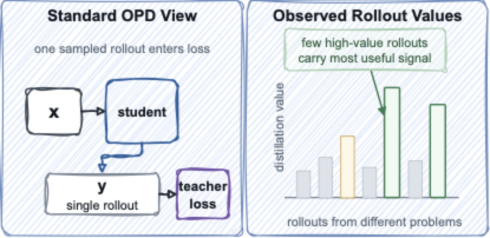
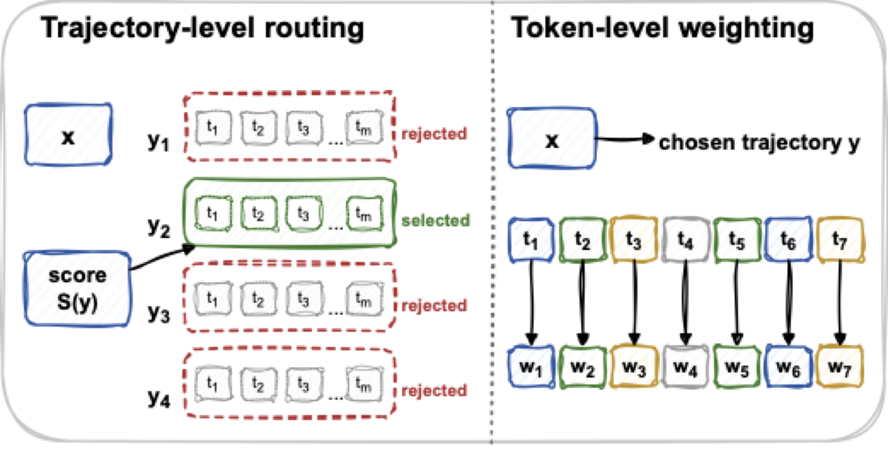
EMNLP 2026 · Selective OPSD
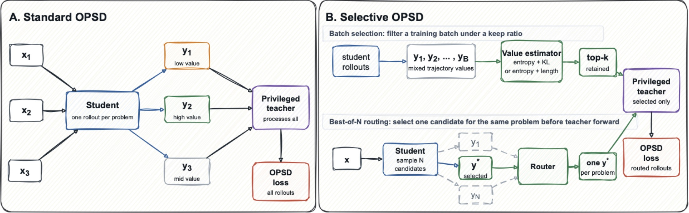
对每个 prompt 采样多条 rollout
用打分函数评估每条轨迹的蒸馏价值
只保留高价值轨迹（batch filtering 或 best-of-N routing）
仅对被选中的轨迹执行 teacher forward 与蒸馏，在提升效果的同时控制 teacher 计算开销。
EMNLP 2026 · Selective OPSD
| Model | Benchmark | 100% (OPSD) | 50% | 25% | 12.5% | |||
|---|---|---|---|---|---|---|---|---|
| High-H | Random | High-H | Random | High-H | Random | |||
| Qwen3-1.7B | AIME24 | 56.94 | 55.83 | 53.61 | 54.72 | 55.00 | 57.22 | 51.94 |
| AIME25 | 43.05 | 43.33 | 41.94 | 41.67 | 39.72 | 42.78 | 39.72 | |
| HMMT25 | 28.61 | 28.05 | 27.22 | 27.77 | 24.44 | 27.22 | 26.67 | |
| Qwen3-4B | AIME24 | 75.55 | 75.83 | 74.72 | 75.28 | 74.17 | 73.89 | 72.78 |
| AIME25 | 69.72 | 69.44 | 68.33 | 69.72 | 69.17 | 68.33 | 66.67 | |
| HMMT25 | 44.44 | 43.06 | 42.22 | 43.33 | 41.94 | 41.67 | 40.56 | |
| Qwen3-8B | AIME24 | 76.67 | 77.78 | 75.00 | 77.22 | 75.83 | 76.11 | 77.78 |
| AIME25 | 70.56 | 70.83 | 67.22 | 69.72 | 68.61 | 70.83 | 68.33 | |
| HMMT25 | 47.22 | 46.39 | 42.22 | 46.39 | 45.56 | 44.72 | 45.83 | |
按 sequence entropy 保留 top-k%：High-H 只保留 12.5% 仍能匹敌甚至超过 100% Full OPSD，而随机保留明显更差 → rollout 的蒸馏价值高度非均匀，值得设计打分函数进行选择。
EMNLP 2026 · Selective OPSD
| Model | Benchmark | 100% | 50% | 25% | 12.5% |
|---|---|---|---|---|---|
| Qwen3-1.7B | AIME24 | 56.94 | 57.78 | 55.83 | 55.27 |
| AIME25 | 43.05 | 43.89 | 42.22 | 41.94 | |
| HMMT25 | 28.61 | 28.33 | 27.50 | 25.83 | |
| Qwen3-4B | AIME24 | 75.55 | 76.39 | 75.00 | 72.78 |
| AIME25 | 69.72 | 70.00 | 69.44 | 69.17 | |
| HMMT25 | 44.44 | 43.33 | 43.06 | 42.22 | |
| Qwen3-8B | AIME24 | 76.67 | 75.27 | 76.67 | 75.28 |
| AIME25 | 70.56 | 70.83 | 70.56 | 68.61 | |
| HMMT25 | 47.22 | 47.50 | 46.39 | 47.22 |
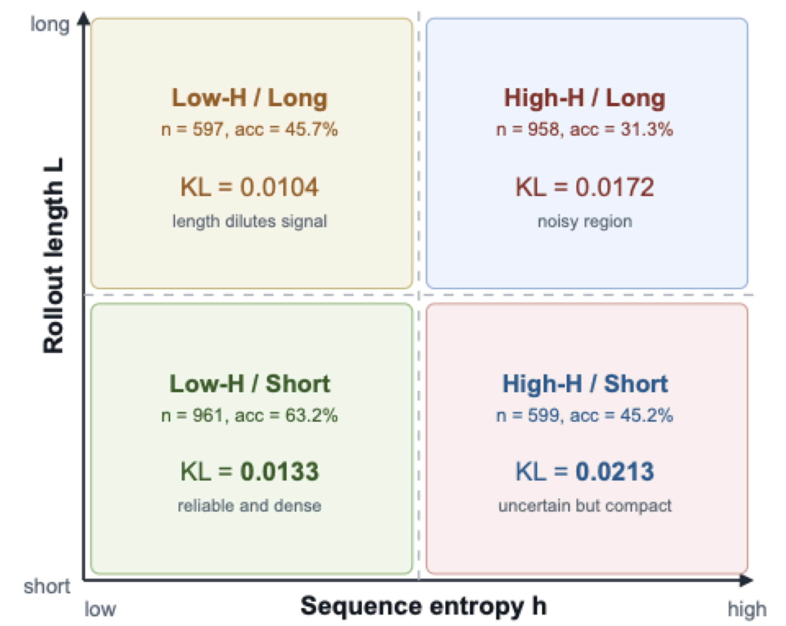
| Model | Benchmark | 100% | 50% | 25% | 12.5% |
|---|---|---|---|---|---|
| Qwen3-1.7B | AIME24 | 56.94 | 58.06 | 53.33 | 56.11 |
| AIME25 | 43.05 | 42.22 | 40.28 | 38.61 | |
| HMMT25 | 28.61 | 28.33 | 25.56 | 26.11 | |
| Qwen3-4B | AIME24 | 75.55 | 76.66 | 74.44 | 73.61 |
| AIME25 | 69.72 | 70.28 | 68.61 | 67.50 | |
| HMMT25 | 44.44 | 44.72 | 40.83 | 44.44 | |
| Qwen3-8B | AIME24 | 76.67 | 78.61 | 77.50 | 76.11 |
| AIME25 | 70.56 | 71.11 | 68.06 | 68.06 | |
| HMMT25 | 47.22 | 48.61 | 46.67 | 45.28 |
Teacher-Aware：ScoreHK = K̂·(1−Ĥ)，50% 保留即匹敌 full OPSD，但需 teacher forward。象限分析发现「短回复 → KL 更高」，故用 length 作为 teacher-free 代理：ScoreLH = (1−L̂)·(1−Ĥ)，仅用 student 侧统计量即可在 teacher forward 前完成路由。
EMNLP 2026 · Selective OPSD
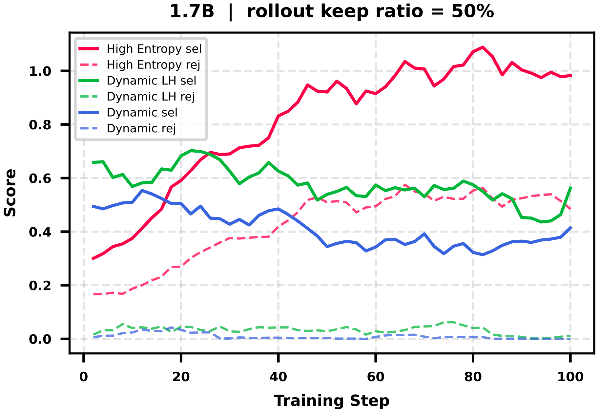
Selected 与 Discarded 轨迹打分全程分离，选择标准自洽；BoN-4 在 1.7B/4B/8B 三个规模上一致超越 Full OPSD（+1.9~3.1），不增加 teacher 开销即取得显著提升。
| Model | Method | AIME24 | AIME25 | HMMT25 |
|---|---|---|---|---|
| Qwen3-1.7B | Base | 51.38 | 36.66 | 23.05 |
| SFT | 48.33 | 36.38 | 22.77 | |
| GRPO | 51.11 | 38.33 | 23.61 | |
| Full OPSD | 56.94 | 43.05 | 28.61 | |
| BoN-4 (Ours) | 59.45 | 45.00 | 30.56 | |
| Qwen3-4B | Base | 74.72 | 66.38 | 42.22 |
| SFT | 70.28 | 62.22 | 43.33 | |
| GRPO | 75.55 | 68.05 | 44.44 | |
| Full OPSD | 75.55 | 69.72 | 44.44 | |
| BoN-4 (Ours) | 78.61 | 72.50 | 47.22 | |
| Qwen3-8B | Base | 75.56 | 65.55 | 43.88 |
| SFT | 72.22 | 64.16 | 42.77 | |
| GRPO | 76.38 | 68.88 | 46.66 | |
| Full OPSD | 76.67 | 70.56 | 47.22 | |
| BoN-4 (Ours) | 79.17 | 73.61 | 50.28 |
EMNLP 2026 · Selective OPSD
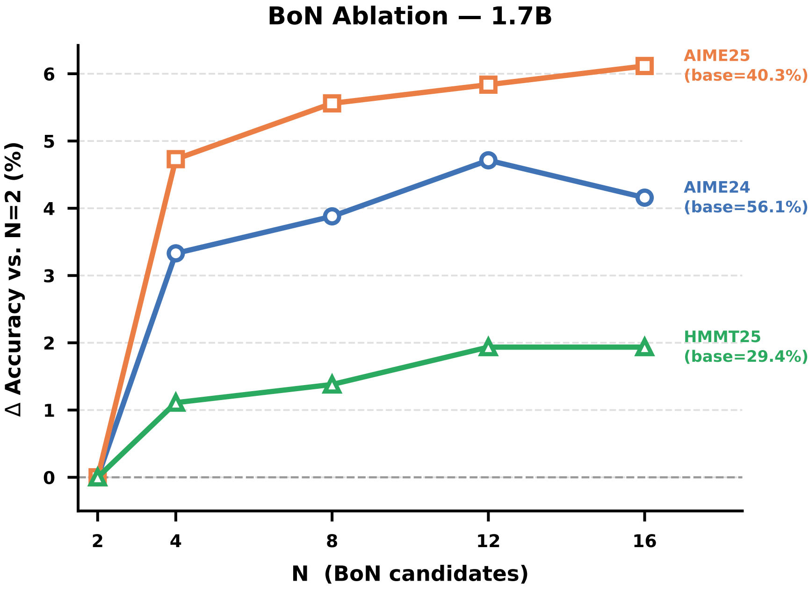
| Model | Rule | AIME24 | AIME25 | HMMT25 |
|---|---|---|---|---|
| Qwen3-1.7B | Random-N | 56.39 | 42.77 | 28.33 |
| Max-H | 57.22 | 43.33 | 28.05 | |
| Min-H | 51.66 | 36.94 | 23.61 | |
| ScoreLH (Ours) | 59.45 | 45.00 | 30.56 | |
| Qwen3-4B | Random-N | 74.44 | 68.89 | 43.61 |
| Max-H | 75.83 | 69.72 | 43.33 | |
| Min-H | 75.00 | 66.94 | 42.78 | |
| ScoreLH (Ours) | 78.61 | 72.50 | 47.22 | |
| Qwen3-8B | Random-N | 76.11 | 71.11 | 46.94 |
| Max-H | 77.78 | 70.83 | 46.39 | |
| Min-H | 75.28 | 66.67 | 44.44 | |
| ScoreLH (Ours) | 79.17 | 73.61 | 50.28 |
| Model | Method | AIME24 | AIME25 | HMMT25 |
|---|---|---|---|---|
| Qwen3-1.7B | Base | 51.38 | 36.66 | 23.05 |
| OPSD | 56.94 | 43.05 | 28.61 | |
| Pseudo-Target | 57.22 | 42.22 | 27.78 | |
| Qwen3-4B | Base | 74.72 | 66.38 | 42.22 |
| OPSD | 75.55 | 69.72 | 44.44 | |
| Pseudo-Target | 75.28 | 67.78 | 44.72 | |
| Qwen3-8B | Base | 75.56 | 65.55 | 43.88 |
| OPSD | 76.67 | 70.56 | 47.22 | |
| Pseudo-Target | 76.94 | 69.72 | 47.78 |
ScoreLH 在所有规模上均为最优打分策略；BoN 路由随 N 增大持续提升，N=12 附近饱和，teacher 开销恒为 1；Pseudo-Target 无法一致超越真实 teacher OPSD，验证了 teacher 信号的不可替代性。
解耦因果诊断 · Decoupled Causal Tracing
ACL 2026 · DUD 解耦式 UQ
黑盒自一致性依赖采样冗余、开销高；Logits 类白盒方法（如 Semantic Entropy）只看输出概率，不检视内部推理过程，把生成当作静态结果而非动态认知过程。
ROME 指出 FFN 存参数化记忆、MHSA 负责上下文路由；但 SAPLMA / ICR Probe 用聚合把两者求和平均，而不确定性恰恰源于二者冲突，聚合会中和掉证据。
注入噪声制造信息瓶颈，再逐层独立恢复 FFN 与 Attention 激活，把推理轨迹拆成两条因果流，形成 2L 维画像供轻量 probe 判定。
ACL 2026 · DUD 解耦式 UQ
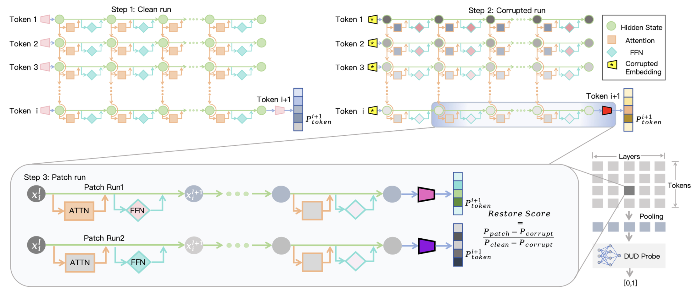
缓存各层 a(l)/m(l) 与 Pclean
对 embedding 注入高斯噪声，得 TE = mean(Pclean − Pcorr)
分别只恢复 Attn 或只恢复 FFN，Sφ(l) = (Ppatch − Pcorr)/TE，拼成 2L 维画像输入 MLP(2L→128→64→32→1)。
ACL 2026 · DUD 解耦式 UQ
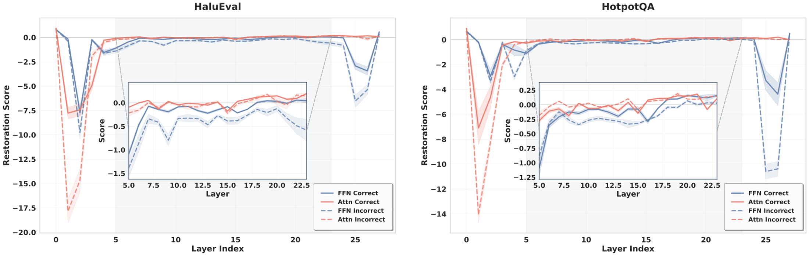
FFN 与 Attn 同现深负谷
FFN 稳定低于 Attn
FFN 骤降而 Attn 趋近 0
错误预测的负值约为正确的 2 倍 → 机制脆弱性可作为不确定性代理。
ACL 2026 · DUD 解耦式 UQ
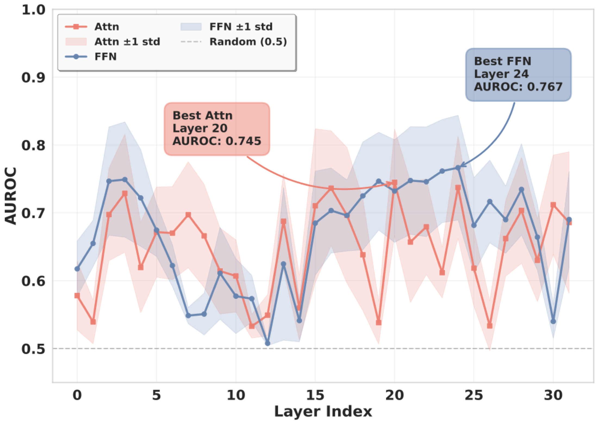
| Quadrant (Layer 23) | Mechanistic State | Error Rate |
|---|---|---|
| Q1 | Robust / Nominal | 16.8% |
| Q2 | Context Deviant | 28.0% |
| Q3 | Memory Deviant | 61.7% |
| Q4 | Dual Deviant | 72.0% |
| Quadrant | Mean Conf. Correct | Incorrect |
|---|---|---|
| Q1 Robust | 1.372 | 0.728 |
| Q2 Context | 1.130 | 0.410 |
| Q3 Memory | 0.785 | 0.364 |
| Q4 Dual | 0.682 | 0.337 |
逐层 AUROC：FFN 峰值 Layer 24 (0.767)，Attn 峰值 Layer 20 (0.745)，峰值层错开、信息互补。四象限错误率由 Q1 的 16.8% 升至 Q4 的 72.0%，但 Q1 错误置信度 (0.728) 高于 Q4 正确 (0.682)——概率阈值无法区分顽固错误与谦逊真相。
ACL 2026 · DUD 解耦式 UQ
| Method | HaluEval | SQuAD | HotpotQA | TriviaQA |
|---|---|---|---|---|
| PPL | 0.5720 | 0.6231 | 0.6577 | 0.7238 |
| LN-Entropy | 0.6431 | 0.6203 | 0.6643 | 0.5994 |
| Semantic Entropy | 0.7745 | 0.7041 | 0.7143 | 0.7362 |
| SAR | 0.7793 | 0.7531 | 0.7335 | 0.7647 |
| LLM-Check | 0.5348 | 0.5331 | 0.5501 | 0.5275 |
| SAPLMA | 0.7328 | 0.7007 | 0.7638 | 0.7650 |
| SEP | 0.7547 | 0.7309 | 0.6537 | 0.7241 |
| ICR Probe | 0.7703 | 0.7548 | 0.8139 | 0.7557 |
| DUD-Probe (Ours) | 0.9487 | 0.8959 | 0.8579 | 0.8031 |
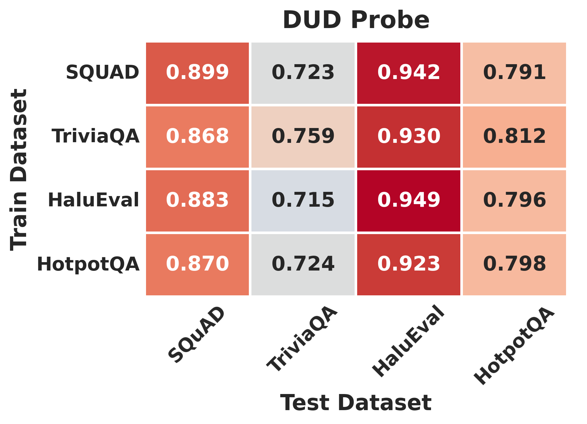
较 Semantic Entropy 在 Llama HaluEval 上 +20.3、SQuAD +16.3；较最强聚合基线 ICR Probe 平均 +3~8 点。跨域迁移平均掉点 < 5%，TriviaQA→HaluEval 达 0.930，逼近同域上界 0.949。
ACL 2026 · DUD 解耦式 UQ
| Configuration | Halu | SQ | Hot | Triv |
|---|---|---|---|---|
| I. Module Contribution | ||||
| Random | 0.5000 | 0.5000 | 0.5000 | 0.5000 |
| Attn Only | 0.9144 | 0.8349 | 0.7933 | 0.7385 |
| FFN Only | 0.8968 | 0.8511 | 0.7872 | 0.7447 |
| Full (dual-stream) | 0.9487 | 0.8959 | 0.8579 | 0.8031 |
| II. Layer Contribution (removed from Full) | ||||
| w/o EL (1-10) | 0.8511 | 0.8351 | 0.7845 | 0.7164 |
| w/o ML (11-21) | 0.8893 | 0.8241 | 0.7576 | 0.7281 |
| w/o DL (22-32) | 0.9001 | 0.8024 | 0.8005 | 0.7542 |
单流探针已优于随机，但双流 Full 在全部数据集最优 → 解耦后同时保留两条通路是增益来源；移除任一层组都掉点，不存在单一「黄金层」；ECE / PRR 与换用 EM、BERTScore 标注时同样全面领先。
| Method | HaluEval | SQuAD | HotpotQA | TriviaQA | |
|---|---|---|---|---|---|
| ECE | SEP | 0.1431 | 0.1537 | 0.0979 | 0.1019 |
| SAPLMA | 0.0997 | 0.1578 | 0.0675 | 0.0435 | |
| ICR Probe | 0.0798 | 0.0314 | 0.0138 | 0.0662 | |
| DUD-Probe | 0.0425 | 0.0173 | 0.0039 | 0.0289 | |
| PRR | SEP | 0.3927 | 0.3578 | 0.3243 | 0.3696 |
| SAPLMA | 0.4414 | 0.4675 | 0.4373 | 0.4459 | |
| ICR Probe | 0.4989 | 0.5204 | 0.4361 | 0.5435 | |
| DUD-Probe | 0.6346 | 0.5669 | 0.5187 | 0.5945 |
| Method | HaluEval | SQuAD | HotpotQA | TriviaQA | |
|---|---|---|---|---|---|
| Exact Match | SEP | 0.6544 | 0.6038 | 0.6359 | 0.7754 |
| SAPLMA | 0.7341 | 0.7267 | 0.7148 | 0.7749 | |
| ICR Probe | 0.7554 | 0.7543 | 0.7497 | 0.7903 | |
| DUD-Probe | 0.8204 | 0.8801 | 0.8717 | 0.8461 | |
| BERTScore > .95 | SEP | 0.6643 | 0.6111 | 0.6799 | 0.7034 |
| SAPLMA | 0.7267 | 0.7313 | 0.7524 | 0.7348 | |
| ICR Probe | 0.7347 | 0.7432 | 0.7781 | 0.7438 | |
| DUD-Probe | 0.8111 | 0.8541 | 0.8969 | 0.8249 |
用隐状态动态替代采样
AAAI 2026 · Sampling-Free UQ
主流 UQ 依赖 Monte Carlo 采样（每条样本 5 次生成）或调用外部模型 API，既放大计算量又累积额外误差；Qwen-7B 上约 25 小时/数据集，难以满足实时低延迟部署。
高置信 token 在浅层即已稳定浮现于词表空间，不确信 token 只有到深层才清晰成形 → 层级演化路径本身就是确定性的直接指示。
追踪各层表示与最终层的语义相似度轨迹，量化拐点前的稳定性与拐点后的收敛决断度，单次前向即可得到不确定性分数。
AAAI 2026 · Sampling-Free UQ
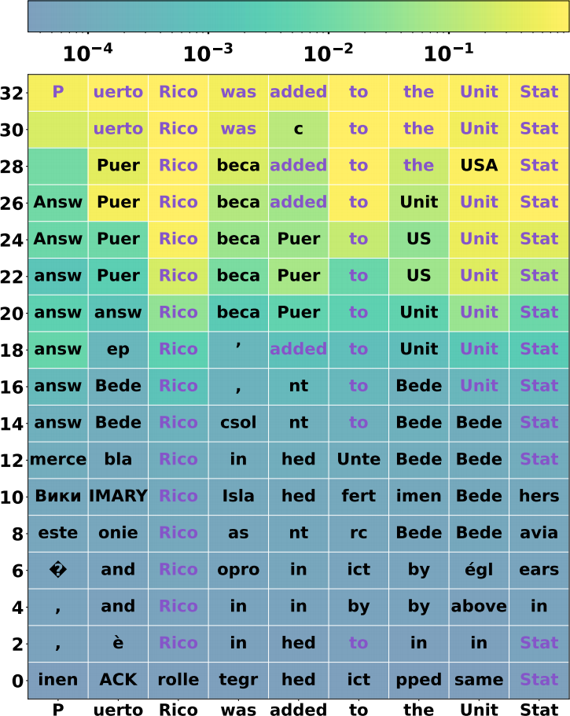
逐层解码可见预测的“成熟”过程：浅层输出模糊甚至无关的 token，随深度推进逐步收敛到最终答案。
已内化的知识出现得更早：命名实体与常见词在浅层即已锁定 —— Rico、Stat 两列自最底层起就是正确 token，而 added、the 要到 20~28 层才收敛。
由此形成核心假设：早期预测的时机与稳定性反映模型对该知识的确定程度，可作为无需采样的不确定性信号。
token 预测的“成熟时机”本身携带置信度信息，可用单次前向的逐层动态替代多次采样。
AAAI 2026 · Sampling-Free UQ
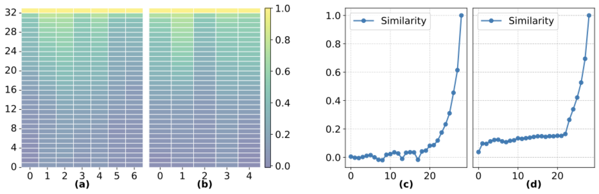
(a)(b) 热力图：uncertain 颜色渐变、收敛慢，certain 快速统一；(c)(d) 层级 cosine：uncertain 早期波动大、收敛迟缓，confident 早期稳定、后段陡升——正是 SSS 与 CCS 刻画的模式。
AAAI 2026 · Sampling-Free UQ
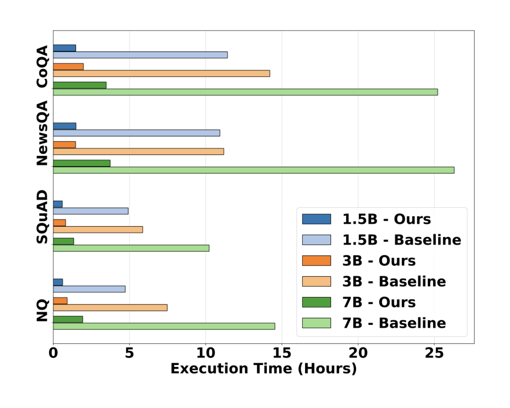
| Size | CoQA | NewsQA | SQuAD | NQ | |
|---|---|---|---|---|---|
| Qwen | 7B | 0.083 | 0.088 | 0.075 | 0.033 |
| 3B | 0.035 | 0.047 | 0.075 | 0.084 | |
| 1.5B | 0.043 | 0.087 | 0.093 | 0.054 | |
| Llama | 8B | 0.042 | 0.035 | 0.014 | 0.064 |
| 3B | 0.133 | 0.057 | 0.072 | 0.107 | |
| 1B | 0.056 | 0.075 | 0.135 | 0.067 |
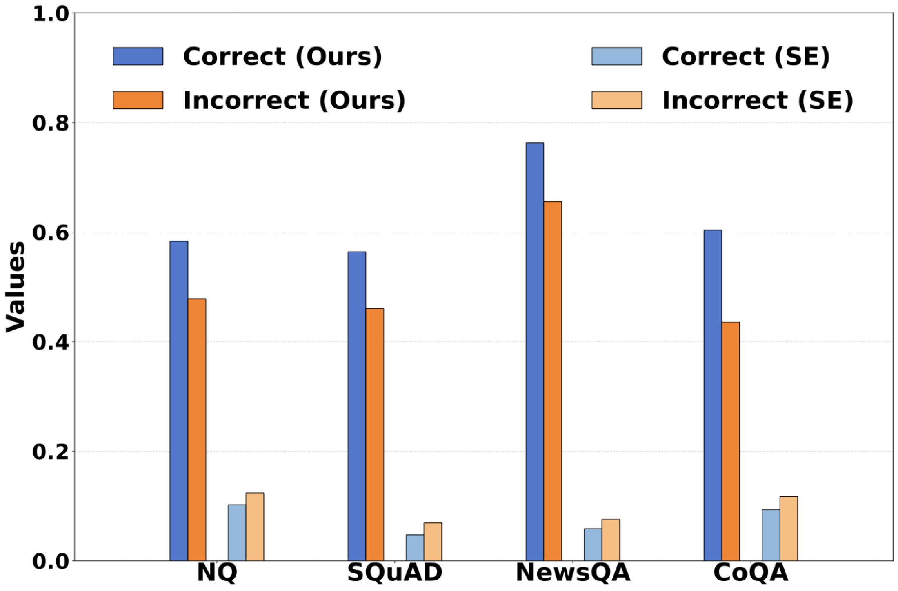
单次前向替代 5 次采样，总脚本耗时约 25× 加速（Qwen-7B 上 ~25h → ~1h）。与 Semantic Entropy 的 Pearson 相关系数全部低于 0.14（多数 < 0.09），说明二者捕获不同维度的不确定性；且本方法对正确/错误预测的分数分离度明显优于 SE。
AAAI 2026 · Sampling-Free UQ
| Size | Dataset | Ours | SE | SAR | LNPE |
|---|---|---|---|---|---|
| 7B | CoQA | 60.19/76.66 | 5.70/73.43 | 13.70/76.03 | 5.61/72.04 |
| NewsQA | 59.86/74.32 | 25.20/70.05 | 25.20/69.36 | 25.61/71.83 | |
| SQuAD | 75.95/71.85 | 44.38/65.37 | 44.35/68.52 | 44.41/67.52 | |
| NQ | 35.09/78.41 | 6.24/75.61 | 10.52/70.10 | 6.46/74.32 | |
| 3B | CoQA | 49.41/66.95 | 33.99/63.74 | 33.96/61.24 | 33.99/63.75 |
| NewsQA | 43.09/70.94 | 41.26/64.43 | 35.42/68.74 | 33.69/65.36 | |
| SQuAD | 50.79/70.06 | 32.22/64.38 | 40.92/65.44 | 32.06/64.32 | |
| NQ | 33.58/77.85 | 33.01/70.15 | 28.99/75.05 | 12.48/69.43 | |
| 1.5B | CoQA | 49.48/64.83 | 41.23/61.33 | 48.68/62.31 | 41.25/61.45 |
| NewsQA | 37.68/64.35 | 33.31/62.38 | 30.73/62.45 | 34.08/62.33 | |
| SQuAD | 50.12/68.41 | 25.31/63.47 | 31.52/60.31 | 30.19/64.33 | |
| NQ | 32.04/71.66 | 23.44/65.62 | 18.35/66.32 | 23.45/65.08 |
| Size | Dataset | Ours | SE | SAR | LNPE |
|---|---|---|---|---|---|
| 8B | CoQA | 56.34/73.23 | 9.30/70.14 | 10.35/69.03 | 13.56/71.03 |
| NewsQA | 33.49/70.01 | 32.19/66.35 | 30.52/67.45 | 29.33/63.37 | |
| SQuAD | 59.64/72.97 | 45.31/67.42 | 46.37/70.31 | 38.73/68.35 | |
| NQ | 32.18/83.67 | 23.88/75.09 | 19.38/77.48 | 22.03/75.61 | |
| 3B | CoQA | 52.95/70.03 | 45.38/63.05 | 46.35/65.42 | 45.38/64.71 |
| NewsQA | 29.82/67.21 | 25.38/64.76 | 17.35/66.75 | 24.52/63.04 | |
| SQuAD | 49.65/71.67 | 32.76/65.03 | 30.43/64.03 | 33.15/66.43 | |
| NQ | 28.98/76.91 | 9.33/69.93 | 10.38/70.15 | 8.59/70.35 | |
| 1B | CoQA | 21.53/65.88 | 9.65/61.12 | 9.65/63.31 | 7.38/61.11 |
| NewsQA | 29.68/65.94 | 15.23/61.15 | 16.53/60.15 | 15.98/62.03 | |
| SQuAD | 22.96/62.31 | 20.33/59.39 | 18.95/55.43 | 19.73/60.91 | |
| NQ | 25.03/64.19 | 15.87/61.33 | 20.37/60.03 | 15.88/61.35 |
QA 任务在 6 个模型规模 × 4 数据集上全部单元格最优，AUROC 较 SE / SAR / LNPE 领先 3~8 点，PRR 优势更大（Qwen-7B SQuAD 75.95 vs SE 44.38；Llama-8B NQ 32.18/83.67）。
AAAI 2026 · Sampling-Free UQ
| Variant | CoQA | NewsQA | SQuAD | NQ | |
|---|---|---|---|---|---|
| Qwen-7B | Ours (SSS+CCS) | 76.66 | 74.32 | 71.85 | 78.41 |
| SSS only | 51.14 | 44.79 | 41.00 | 59.51 | |
| CCS only | 47.43 | 50.37 | 49.77 | 50.71 | |
| Llama-8B | Ours (SSS+CCS) | 73.23 | 70.01 | 72.97 | 83.67 |
| SSS only | 52.47 | 49.33 | 59.70 | 70.80 | |
| CCS only | 52.59 | 50.09 | 50.46 | 57.40 |
| Variant | CoQA | NewsQA | SQuAD | NQ | |
|---|---|---|---|---|---|
| Qwen-7B | Ours (max-H head) | 76.66 | 74.32 | 71.85 | 78.41 |
| AVG | 74.54 | 72.06 | 67.53 | 68.41 | |
| Dynamic | 74.54 | 72.06 | 67.53 | 68.46 | |
| Llama-8B | Ours (max-H head) | 73.23 | 70.01 | 72.97 | 83.67 |
| AVG | 70.52 | 62.42 | 66.93 | 68.45 | |
| Dynamic | 70.53 | 62.42 | 66.93 | 68.46 |
| Dataset | Ours | SAR | SE | |
|---|---|---|---|---|
| Qwen-7B | GSM8K | 70.56 | 60.41 | 57.83 |
| Multi-30k | 83.41 | 75.38 | 73.41 | |
| Llama-8B | GSM8K | 71.43 | 65.41 | 60.31 |
| Multi-30k | 85.83 | 78.66 | 79.05 |
SSS 与 CCS 单用都明显下降，二者互补；最高熵 head 的注意力聚合优于均值与逐样本动态选择。方法不限于 QA——GSM8K / Multi-30k 同样领先（Llama-8B 85.83 vs SAR 78.66）。
两阶段框架：从领域知识注入与推理能力对齐到轻量化蒸馏
美团 · 基于大模型的搜索广告相关性优化
与具备标准化结构属性的电商商品不同，服务零售行业的商户经营方式灵活，命名描述多样、服务边界模糊，缺乏统一的结构化信息。
不同行业在业态与经营模式上差异显著，导致相关性判断需依赖具体场景与隐含规则，难以建立统一标准。
丰富的平台领域知识（涵盖商品特性、行业认知与业务规则）与细粒度的语义理解能力（对齐人类专家判断逻辑）。同时，为满足线上高并发与实时性的要求，模型还必须轻量化，以支持线上部署。
美团 · 基于大模型的搜索广告相关性优化
美团 · 基于大模型的搜索广告相关性优化
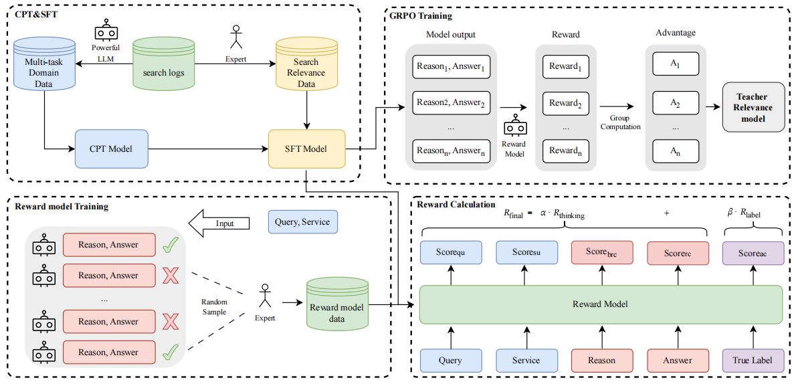
首先是使用大规模任务数据（主要来自日志）对开源基座模型进行微调以注入平台所需的知识。
然后用高质量人工标注的推理数据进行微调，初步具备推理能力。
最后再构造奖励函数，进行强化学习优化。
美团 · 基于大模型的搜索广告相关性优化
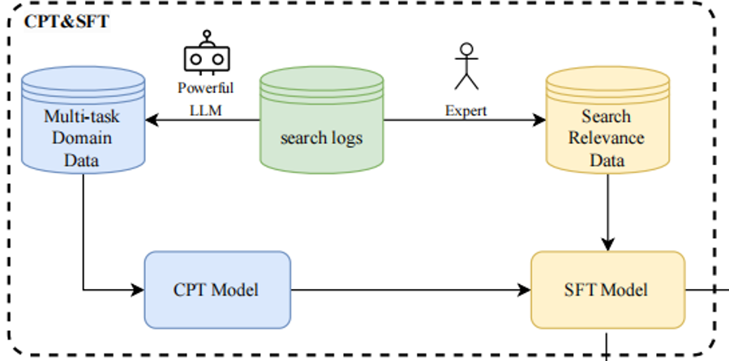
| 模块名称 (任务) | 输入 (Input) | 输出 (Output) |
|---|---|---|
| 查询理解Query Understanding | 用户搜索的 query | 用户意图的自然语言解释 |
| 服务理解Service Understanding | 具体服务 | 服务内容及业务属性的解释 |
| 查询到服务映射Query2Service | query | 预测用户可能点击的服务 |
| 服务到查询映射Service2Query | 服务 | 该服务可能被点击的用户查询 |
| Pointwise 相关性判断Relevance Pointwise | query 和 service | 二者是否相关的判断 |
| Pairwise 相关性判断Relevance Pairwise | query 和两组 service | 更相关的 service |
| Listwise 相关性判断Relevance Listwise | query 和多个 service | 最相关的 service |
首先为持续预训练注入平台领域知识，为后续的复杂推理打下知识基础。用能力更强的 LLM（DeepSeek-R1，GPT-4.1，Qwen3-235B-A22B 等），并结合线上点击日志，进行自动化标注（以查询理解任务为例，我们引入 query 下的 top 点击 service 信息来帮助 LLM 更好的理解 query，以生成符合平台特性的意图理解数据），构建了一个涵盖搜索相关性核心子任务的语料库，含数百万条样本，共涉及上表七种任务类型以供训练。
美团 · 基于大模型的搜索广告相关性优化
对用户搜索意图的把握是否准确
对服务核心属性（适用对象，履约方式）等描述是否准确
相关性判断是否符合平台业务规则逻辑
推理理由是否能支撑最终答案
生成的答案是否与真实标签一致
此后需要构建一个高质量的专家标注数据集供奖励模型训练。对于给定的 <query，service>，使用多个通用 LLM 生成 <reason，answer>，从中随机采样以覆盖不同的推理风格与潜在的错误模式。借鉴人类专家的相关性标注推理思路，将推理过程分成上表 5 个维度，并由人类专家对每个生成结果进行标注得分。随后使用 GRPO 算法进行模型训练。
美团 · 基于大模型的搜索广告相关性优化
| Method | Accuracy | Macro F1 | Weight F1 |
|---|---|---|---|
| Qwen3-8B (Zero-shot) | 0.5480 | 0.3955 | 0.5748 |
| Qwen3-8B (Few-shot) | 0.5893 | 0.4375 | 0.6254 |
| DeepSeek-R1 (Zero-shot) | 0.5140 | 0.4067 | 0.5827 |
| DeepSeek-R1 (Few-shot) | 0.6197 | 0.4696 | 0.6638 |
| SFT Baseline | 0.7708 | 0.6980 | 0.7485 |
| CPT+SFT | 0.7762 | 0.7032 | 0.7538 |
| + GRPO (Rlabel) | 0.7812 | 0.7101 | 0.7634 |
| + GRPO (Weighted) | 0.7873 | 0.7174 | 0.7701 |
美团 · 基于大模型的搜索广告相关性优化
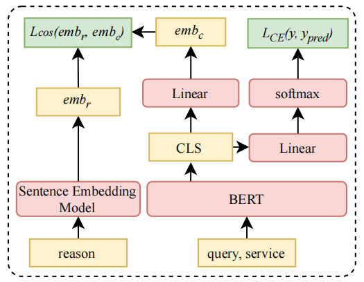
忽视了嵌入模型与 BERT 原本的表征差异，且引入额外的线性投影层增大了推理监督信号的过程损耗（即模型偷懒）。
美团 · 基于大模型的搜索广告相关性优化
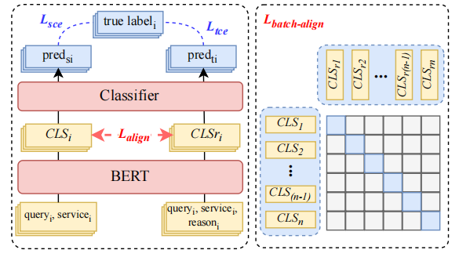
因此二阶段引入了对比自蒸馏的方案，一方面要求分类尽可能准，另一方面要求学生模型的输出表征要和教师模型的输出表征要尽可能拉近，在此期间教师也进行学习以保证其更好的表征学习。
| 查询 | 现调鸡尾酒 |
|---|---|
| 服务 | 名称：Jiu Xiang Homebar 标签：鸡尾酒套餐、单杯鸡尾酒、威士忌可乐桶、畅饮…… |
| 推理过程 | 用户查询“现调鸡尾酒”隐含了现场调制的意图。该服务是一家“Homebar”，不仅明确提到了“鸡尾酒套餐”，还属于“酒吧”类目。关键推断在于：酒吧场景下的鸡尾酒本身就是现点现调的，从而满足“现调”的要求……因此，该服务高度相关。 |
| 标注 | 2 |
美团 · 基于大模型的搜索广告相关性优化
| Method | Accuracy | Macro F1 | Weight F1 |
|---|---|---|---|
| Baseline | 0.7645 | 0.6945 | 0.7461 |
| Baseline Reasoning Distill. | 0.7678 | 0.6959 | 0.7486 |
| CRSD + ℒalign | 0.7707 | 0.6993 | 0.7522 |
| CRSD Full (ours) | 0.7761 | 0.7076 | 0.7583 |
CRSD 方法优于传统标签蒸馏和嵌入对齐蒸馏基线，轻量级 6 层 BERT 成功保留了 Teacher 模型 98.6% 的性能 (Macro F1)。
| Method | Accuracy | Macro F1 | Weight F1 |
|---|---|---|---|
| CRSD Full(Ours) | 0.7761 | 0.7076 | 0.7583 |
| w/o Reasoning Path | 0.7639 | 0.6947 | 0.7463 |
| w/ Random Reasoning | 0.7624 | 0.6918 | 0.7440 |
移除推理路径或使用随机推理均导致性能下降，证明收益来源于推理逻辑的内化而非噪声带来的增益。
| Model | AdCTR | AdCVR | GTV | UVCTR | PVCTR |
|---|---|---|---|---|---|
| online | - | - | - | - | - |
| Ours | +0.91% | +1.06% | +0.40% | +0.11% | +0.18% |
相较于 Base 组（仅数据蒸馏 BERT），线上 A/B 实验收益显著，CTR 提升 0.91%，CVR 提升 1.06%，ACP 同提升 0.35%。全量上线后，服务零售广告主区 Badcase@5 降低 30.5%。
相似视频召回与配对 · 级联多模态识别 · 多 teacher 驱动迭代
字节跳动 · 非原创内容识别
非原创指使用他人素材、缺乏实质性新增贡献（信息增量或剪辑价值）的内容，包括完全搬运（Total Copied，TC）和低成本二创（Low Cost，LC）。
模型依据内容判定规则（Policy）进行五分类，分类结果对应不同的治理方式：
站内 TC、站外 TC 对应一级治理（Grade 1），LC 对应二级治理（Grade 2），以减少非原创内容的推荐曝光。
高成本二创（High Cost，HC）和原创／正常（Normal）。
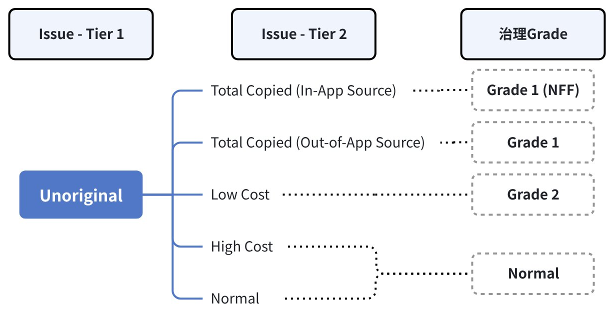
字节跳动 · 非原创内容识别
| 类别 | 简单定义 | 示例 |
|---|---|---|
| 完全搬运—站内TCTotal Copied (In-App Source)Grade 1 · NFF | 搬运 TikTok 站内他人内容，没有或几乎没有新增贡献。 |
主体内容一致，仅改变背景颜色 |
| 完全搬运—站外TCTotal Copied (Out-of-App Source)Grade 1 | 搬运站外他人内容，没有或几乎没有新增贡献。 |
|
| 低成本二创Low Cost，LCGrade 2 | 使用他人素材并做简单加工，新增贡献有限，观众主要仍在消费原素材。 |
低剪辑价值：仅在原视频后添加一个片段，没有形成新主题 |
| 高成本二创High Cost，HC正常分发 | 使用他人素材，但通过解说、观点或剪辑重构，使新增贡献成为作品的主要价值。 |
|
| 原创／正常Normal正常分发 | 创作者原创，或经确认由内容正主发布的内容。 | — |
字节跳动 · 非原创内容识别
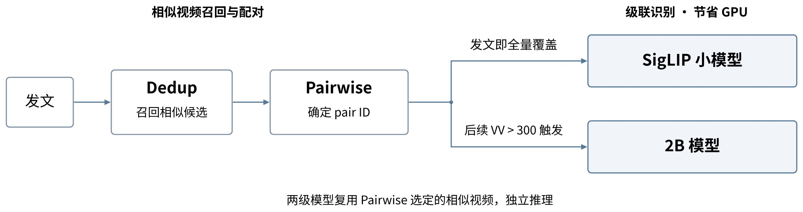
召回相似视频候选 List
从候选 List 中，挑选唯一、最相似视频，输出对应的 Pair ID
SigLIP 小模型覆盖全量发文，VV>300 时触发 2B 模型进一步识别（主要是为了平衡识别效果和 GPU 资源）
视频和图文是两条链路，模型不同、但链路结构完全一致。
字节跳动 · 非原创内容识别
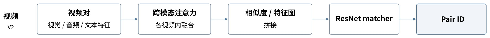
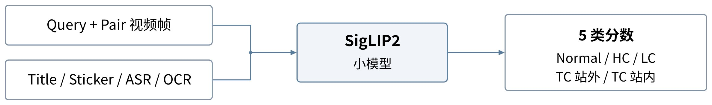
字节跳动 · 非原创内容识别
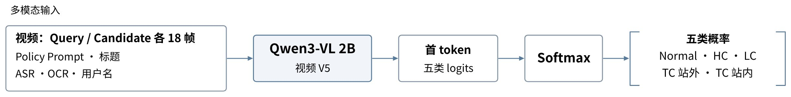
字节跳动 · 非原创内容识别
人工标注量少、噪声高、产出慢，难以支撑训练集标注。
Policy 大版本更新后，需在无配套训练集的情况下，2 周内完成模型训练与上线。
Agent 短期内难以提供符合新 Policy、可直接用于蒸馏的可靠监督。
根据每轮评估暴露的薄弱类型持续扩召，围绕客观证据 Agent 按需合成，让数据构建贯穿训练。
通过不同分布上采样形成互补 teacher，反复清洗存量与新增数据，减少噪声和单一 teacher 的偏差。
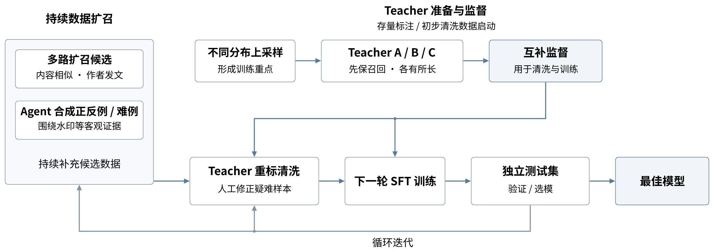
字节跳动 · 非原创内容识别
围绕目标类型与每轮评估 badcase，持续通过内容相似检索、作者历史发文等线索扩展候选数据，使训练数据更接近目标分布。
随机采样和单一路径难以覆盖目标类型；持续扩召能随模型迭代补齐新的覆盖缺口，提高有效样本占比。
针对水印等有客观证据的规则，控制关键条件，合成正例、反例和难例，例如改变水印与作者身份的匹配关系。
客观证据使标签可核验，也便于构造真实数据中稀疏的条件组合，让模型学会哪些证据决定标签，减少对表面特征的依赖。
字节跳动 · 非原创内容识别
非原创规则涉及多层条件与信息增量判断，if-else 的逻辑较多导致边界较“不规则”；扩召的数据直接混训会带入噪声，逐条依赖高质量人工标注又难以规模化（且目前还没有一个 PR80 的 Agent 能用来直接蒸馏）。遂，通过“持续扩召／按需合成 → 重标清洗 → SFT → 验证反馈”反复迭代，并用多 teacher 改善 label 质量。
以存量人工标注与初步清洗数据为起点，先保证召回能力，避免遗漏潜在正例；对不同分布分别上采样，提高它们在相应 teacher 训练中的占比，训练各有所长的 teacher，再按优势组合。
数据数量与标签质量不均时，单个混训 teacher 容易受主流分布和错误标签影响，对薄弱类型清洗不足。不同采样让各 teacher 重点学习不同类型，组合后互补，减少同一偏差在循环中延续。
Agent 利用组合 teacher 构建标注策略，对候选训练集 relabel 和筛选，少量人工修正疑难样本；再用清洗后的数据 SFT 下一轮模型。
每轮评估后，针对薄弱类型继续扩召、按需合成，并用更新后的模型清洗存量与新增数据，进入下一轮 SFT。
字节跳动 · 非原创内容识别
按模型阈值与优先级得到最终预测，再按 Grade1＝TC（站内＋站外）、Grade2＝LC、其他＝Normal／HC 统计。同级命中计 TP，误报及 TC↔LC 错档计 FP，非原创被判为其他计 FN；本业务口径中，错档不再计 FN。
每个类别分别做“该类／非该类”二分类，分数达到阈值即判正。TC 总头合并站内、站外 TC，LC 头只看 LC。
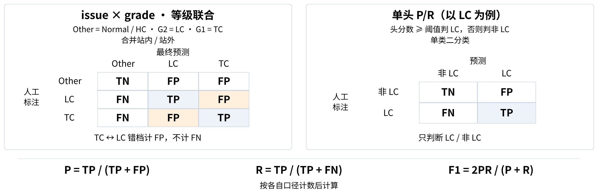
口径均由 Policy 和 PM 同学定义。
字节跳动 · 非原创内容识别
衡量用户消费中负向内容的占比，越低越好；非原创业务重点关注其中非原创内容的 VV 占比。
| 指标 | 含义与口径 | 用途 |
|---|---|---|
| Test Model ENVR新模型评估指标组 | 使用新模型判定负向内容；在识别模型部署后、策略实验开始前更新。 | 提前衡量新模型及配套策略的治理效果，支持上线决策。 |
| Model ENVR正式关注指标组 | 使用旧模型（推全模型）判定负向内容；口径随模型／策略全量上线更新。 | 在线上推全模型口径下，评估治理策略的效果。 |
实验组与对照组使用同一测量模型、阈值和统计范围，比较 ENVR 的相对变化。模型口径切换本身会改变负向内容集合，因此需结合离线 P/R 解读。同步关注 HLT7、SD，以及 LT7、投稿量、新鲜度等护栏，综合判断收益与代价。
字节跳动 · 非原创内容识别
本次方案将非原创接入 EcoTag，并升级识别模型、调整分级打压力度。以下按 LR 报告的实验结果汇总。
| 数据集 | 基线 | 新方案 | ||||
|---|---|---|---|---|---|---|
| P | R | F1 | P | R | F1 | |
| 视频（Global 12k，Policy v4） | 57% | 61% | 59% | 80% | 71% | 76% |
| 图文（Global 6k，Policy v5） | 59% | 50% | 54% | 80% | 50% | 62% |
| 区域 | Test Model ENVR | SD | HLT7 | |
|---|---|---|---|---|
| 非原创视频 VV% | 非原创图文 VV% | |||
| RoW | 约 −28% | 约 −17% | −0.226% | −0.105% |
| EU | 约 −24% | 约 −13% | +0.168% | +0.025% |
| US | 约 −28% | 约 −14% | 持平 | 持平 |
新模型口径下，非原创视频／图文曝光占比均下降；表中线上数据均为相对对照组的变化。